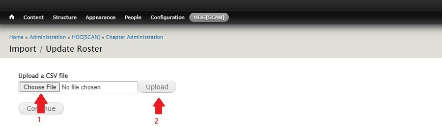

Managing Your Chapter Membership
Using the Manage My Chapter feature in Chapter Officer Resources is an easy way to maintain an accurate count of your active chapter members. Use this function to review your member list and add or delete members from your active roster to ensure you have an accurate list of your membership. Updating your membership roll is also a good opportunity to reach out to your members to confirm their contact information is up to date and that they have active profiles in the system.
- Login to the Chapter Officers Resources section of harley-davidson.com then, referencing the image below, click the Manage My Chapter link.
- Referencing the image below, click the CREATE MEMBER REPORT button. This will download your chapter's membership report to your computer.
The download file is in a
CSV(Comma Separated Value) format.
- Referencing the image below, click the CREATE MEMBER REPORT button. This will download your chapter's membership report to your computer.
The download file is in a
- The following steps will guide you through uploading the file to HOGScan. (Ensure you are logged into your account.)
Referencing the image below, click the HOG[SCAN] link in the admin toolbar.

- Referencing the image below, on the page that opens click the Chapter Administration link
- Referencing the image below, on the page that opens click the Import / Update Roster link

- Referencing the image below, on the page that opens click the Choose File button and choose the
CSVfile to be uploaded, then click the Upload button. 